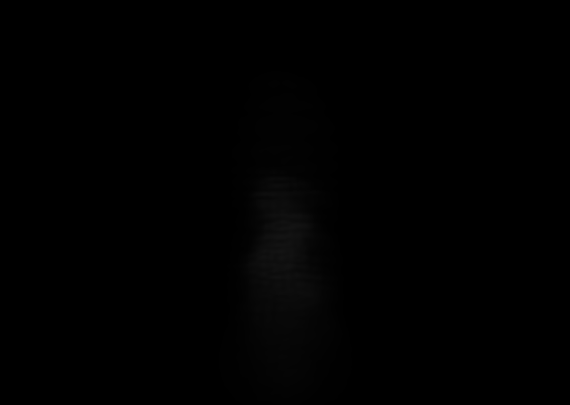
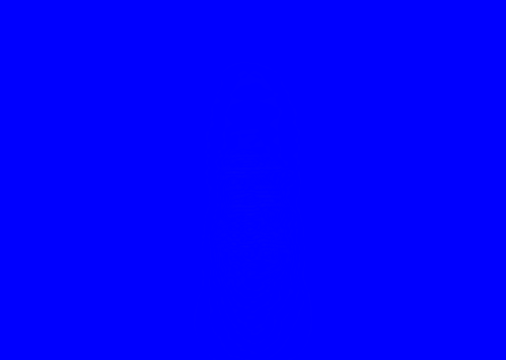
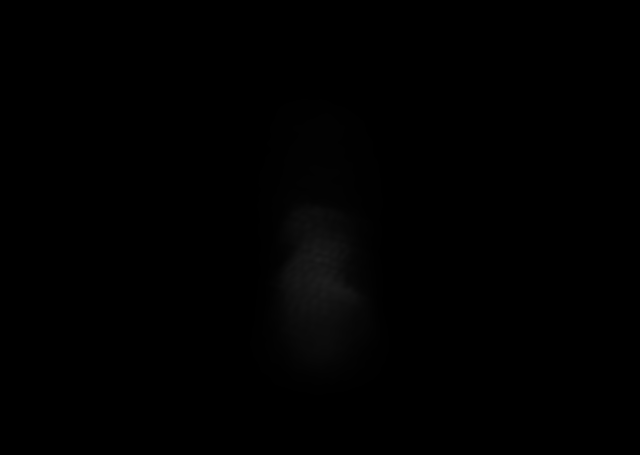

Recorded Native
Pre-absorption dense ray integral

49,536 rows; no cross terms

49,536 rows; same ownership

100,215 rows; exact half-mass phases

Absolute luma difference

Question: do R1/R2 fail because each residual Gaussian is trapped inside one rigid 4x4x4 ownership block?
Controlled change: exact R160 step 45 pre-absorption body target, frozen 1,024 broad control, full covariance, cameras, extinction scale 0.2, coverage 1, and display-only exposure 8x. R3 adds a complete second 4-cell partition staggered by (2,2,2); every positive voxel gives half its residual mass to each partition. Membership closes at [1,1]. R2 has 49,536 residual rows; R3 has 100,215 uncapped residual rows.
Initial metric: versus R2, R3 changes combined MSE by -6.64% native and -0.25% elevated +35. This record asks whether that native gain is visible continuity/topology or only a smoother projection.




